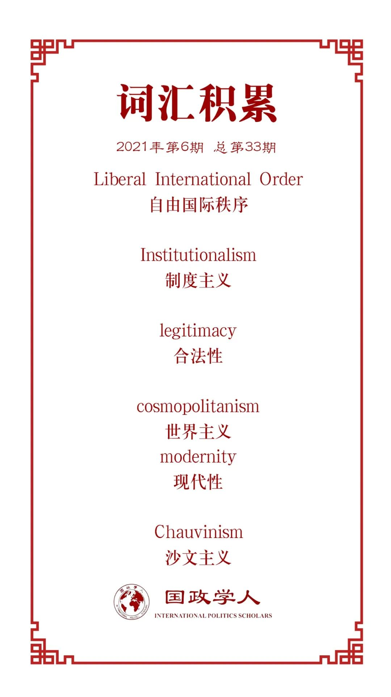

收录于合集

作品简介
【作者】 迈克尔·巴内特（Michael Barnett）乔治华盛顿大学国际事务与政治科学教授。研究兴趣包括中东问题、人道主义、全球治理、全球伦理和联合国，近期研究项目包括全球治理形式的变化，自由国际秩序中挫折与进步的关系。
【编译】 戎秦婴（国政学人编译员，辽宁大学国际政治专业）
【校对】 徐一凡
【审核】 李博轩
【排版】 林祉欣
【美编】 臧泽华
【来源】 Michael Barnett.“International Progress, International Order, and the Liberal International Order” The Chinese Journal of International Politics , vol. 14, no. 1, 2021, online.
【归档】 《国际关系前沿》2021年第6期，总第33期。
期刊简介
《中国国际政治杂志》（ The Chinese Journal of International Politics ）是牛津大学出版社出版的经同行评议的学术季刊，以现代方法论、历史、政策研究为主要内容，多数文章与中国及其外交政策相关。该期刊致力于为有关问题的学术交流提供平台，2019年影响力因子为1.897。
国际进步、国际秩序和自由国际秩序
International Progress, International Order, and the Liberal International Order
迈克尔·巴内特（Michael Barnett）
内容摘要
当前学界对于自由国际秩序（LIO, Liberal International Order）为何出现危机这一问题的探讨，大多围绕地缘政治、全球化和由经济议题引发的新民粹主义和民族主义等问题展开，西方国家为了迁就国内民众的利益而抛弃了原有的自由主义价值观和制度。国际秩序的合法性来自于物质力量和精神力量的共同作用，自由主义的进步来自于人类实践的道德层面。如果自由国际秩序正在衰落，那么同样我们也应考虑它的道德基础是否在衰落。本文“导言”部分简要介绍了国际秩序问题，第二部分“国际秩序、合法性与进步”探讨了自由国际秩序本身及其进步，以及道德层面可能出现的衰落问题。在简要研究国际自由主义中的自由主义问题和20世纪后期出现的自由国际秩序后，本文提出以个人主义为核心的当代国际秩序是自由国际秩序之道德基础衰落的原因之一，即衰落的根源来自于自由主义本身。“结论”部分探讨了在当前自由国际秩序的衰落与新冠疫情并存的背景下国际秩序未来如何发展。
文章导读
01
导言
一战后欧洲人丧失了对自身文明的优越感和文明进步的信心，诗人、艺术家、知识分子和政治家都笼罩在悲观主义情绪下和对道德滑坡的恐惧中。关于自由国际秩序衰落的讨论大多围绕着地缘政治、全球化和新形式民粹主义和民族主义等物质性因素，即西方国家为了迁就国内民众的利益而抛弃了原有的自由价值观和自由制度。但国际关系研究难以察觉精神因素的作用，如果所有的国际秩序都含有精神层面的因素，那么自由国际秩序中的精神层面又是什么？进步包含物质和精神两个维度，既有提高收入、延长寿命和增加社会经济机会，同时也包含人与人之间关系的和谐。换言之，精神维度与人类情感和实践紧密相连，当人们对其的信念和实践都停滞时，自由国际秩序就可能会出现衰退。
02
国际秩序、合法性和进步
国际秩序关注制度、法律和规范如何产生又怎样维持行为体间的联系和行动模式。首先，国际关系理论通过对某一国际秩序中所包含的一致性（consent）与强制性（coercion）两因素的占比进行比较，从而对不同国际秩序进行分类。
现实主义理论认为强制性因素占主导地位时的秩序最为合理，如均势或霸权体系。而制度主义（institutionalism）和英国学派则认同两种因素共同起作用，制度的形成来自于理性行为者自愿签订的契约。其中，行为体受到条约的约束，同时建立相关机构，配备强制性工具，最终安全利益趋同的国家将建立一个包含主权、外交和均势等议题的规范乃至战争规则的国际社会。
建构主义者、马克思主义者和女性主义者对于国际秩序中强制性和一致性的关系有着更复杂的看法。如结构理论（structural theories）认为是结构的作用产生了行为主体、身份、利益和实践等，即出现了“文化欺骗（cultural dupes）”的现象，使行为体间自觉形成秩序，融入社会。马克思主义者认为这是一种“错误意识”（false consciousness）的作用。正如史蒂文·卢克斯（Steven Lukes）所说：“A可以通过让B做他不想做的事来行使权力，也可以通过塑造B的意愿行使权力，控制别人的思想和欲望来确保他们的顺从。”由此可见，使行为体做出某种行为可能并不是因为认可或受威胁，而是由于某种控制因素或者话语体系的压力，这是一种更加分散、间接的权力。
第二点是合法性（Legitimacy）问题，合法性指“在某种社会建构的规范、价值和信念系统下，某行为体的行为是合理的”。合法性是在社会联系中产生的，是由他者赋予的，自私自利的行为是不会被赋予合法性的。其包括两个要素:决策结果是经过公认的程序作出的、决策结果是符合社会价值观的。合法性因素在国际秩序产生过程中发挥了重要作用。
但维护一个国际秩序及其制度却可能会违反建立它的初衷（beyond the present arrangements）。比如，联合国的合法性更多地依赖其象征地位，而非实质或标准意义上的合法性。联合国内国家间难以达成一致性，行动往往符合强国利益而不是国际社会价值观，但联合国的存在为努力构建一个更加和平、繁荣和公正的世界带来希望。
这种理解国际秩序和制度的方式，包含着历史哲学的因素，认为历史进程有其自己的节奏、行动、目的和方向。衰退和退化理论（theories of regress and decline）认为人类历史正在走向物质衰退和道德崩塌，如启蒙运动和现代性蕴含着毁灭的种子，科技进步加快人类灭亡，核武器和气候变化是最大威胁因素；再如现实主义对于人性的悲观态度，所谓“进步”只是大国和国际秩序的起落循环。相反，进步理论强调了人类历史的向上发展，“进步是不可逆转的变化”，新自由主义和英国学派等均对历史进程持乐观态度。
03
自由主义、自由国际秩序及其限制
自由主义进步观的出现与启蒙运动不可分割，在启蒙运动的作用下使进步观摒弃了原先包含的宗教因素，出现了世俗化的趋向，并成为一种“公民宗教”（civil religion）；人类成为历史进步的主导力量，出现了科学的解释方法和实践，进步是不可避免且不可逆转的；物质世界前进的同时，人类精神层面也在进步，道德进步、人人平等观念以及同情心的出现，促使共同人性形成。职责与义务的范围不断扩大，民族主义让位于世界主义，各国人民逐渐接受普世价值和跨国理念。
自由主义政治理论和实践与启蒙运动、道德观进步和人性论紧密相关，自由主义认为每个人都是独立个体，人人平等、个人自由，反对君主制、贵族制。这些自由被在社会契约和在人民同意的原则下赋予的权力来维持。然而权力的滥用、暴政以及对自由的侵犯等会使原本用来保护人民自由的权力成为对自由的威胁。这时就需要各种制度安排如权力制衡、分配、监督机制和选举以保障自由。
自由主义和制度保障促使人类创造力产生和发展，进一步推动物质世界和精神文明的进步，终将实现世界和平、繁荣和进步。
04
自由国际秩序（LIO）
自由主义成为国际秩序的一部分已有长达两个多世纪的历史。19世纪时“自由主义”以帝国主义和殖民主义为基础；一战后民族自决和国际联盟的兴起促进了国际自由主义进步；在二战后则体现为联合国的建立、帝国的消亡以及主权平等观念的兴起。冷战是自由国际秩序建立的奠基时期。对于该时期国际秩序的建立，约翰·伊肯伯里（John Ikenberry）认为，美国曾建立了自由民主国家的联盟，以“胡萝卜加大棒”的方式维持联盟，为成员国提供搭便车机会，路径依赖和收益的增加使联盟不断制度化，同时通过国际货币基金组织、世界银行和关贸总协定，以及七国集团等非正式团体努力构建更加开放的全球政治经济体系。苏联解体与冷战结束，使西方国家对于其民主自由制度拥有更强的优越感，市场、民主和自由权利将给世界带来和平与繁荣，原苏联阵营国家排队加入自由俱乐部，联合国成为自由主义价值观传播的重要参与者和工具，到20世纪90年代末西方秩序已成为自由国际秩序。
关于自由国际秩序是否是有益和自由的，仍存在很大争论。在理论上该秩序以个人自由和权利为基石，促进自由市场建立、保障民主人权、扩大国内外交流以及建立相关制度和机构，最终将带来和平与繁荣。但实际上由于地缘政治矛盾、经济发展停滞、不平等加剧以及移民问题等因素的作用，自由国际秩序出现衰落趋势。但衰落根源在于这些外在因素还是自由主义本身的衰退，是值得探讨的问题。
05
自由国际秩序的自由限度
世界主义价值观的作用实际上被高估了，全人类间的接触、交谈乃至拥抱难以实现。当代世界主义观念建立在痛苦的共同经历之上，苦难创造了人与人之间的联系，但未带来平等，仅停留在帮助者与受助者层面，共有观念难以形成。同时国家提供的认同感和归属感进一步区分了“我们”与“他者”的区别，甚至导致沙文主义和仇外情绪。
自由主义核心之一是自由市场的作用。在以私有产权、自由市场和自由贸易为基础的经济运行框架内，个人不受不合理的政府行为和道德干预，充分发挥个人创业自由和技能，最终会促进人类福祉。市场本身甚至可以成为一种伦理，塑造有价值的事物，界定公平和正义，为生命赋予价值。当代自由主义是关于“我”而不是“我们”的理念，只能靠自己的力量取得成功和财富，应承担自己选择的代价。
如道德经济学是关于市场、道德和生命价值间关系的经济学研究领域，最初被用于解释英国的粮食骚动。其重要概念之一是弱势群体是否、何时以及如何得到包括国家在内的其他人的帮助。在物质缺少的情况下，商品价格往往会超出该群体可接受的范围，这时便出现了詹姆斯·斯科特（James Scott）所说的社会保险。该保障由社会成员之间的相互义务网络提供，并由政治、经济精英和国家提供支持。道德经济学家着重关注义务网络瓦解及其原因，提出其是由市场关系和经济意识形态变化而导致的。对于英国饥荒问题，自由主义者反对引入监管和限制玉米价格上涨，认为其只会导致投机行为、黑市出现和抑制经济增长。
卡尔·波兰尼（Karl Polanyi）曾提出嵌入式经济和非嵌入式经济的区别。嵌入式经济使生产和交换屈从于社会、政治或宗教目的和实践中；而非嵌入式经济把市场从社会关系和制度中独立出来，拥有自主权，并塑造了道德、公平和正义。这两种模式导致了“双重运动（double movement）”，在欧美产生了左翼和右翼运动。二战后西方政策制定者欲建立国家和国际层面的国际机构以加强经济间相互依存关系，保护本国人民免受经济衰退影响；相对应地，20世纪80年代新自由主义兴起，削弱嵌入式的自由主义道德经济理念和福利国家政策，个人主义复兴。
几个世纪以来自由主义出现了许多不同面貌，同样地，自由国际主义及其创造的国际秩序并不是单一事物，而是不断变化的，但其核心在于能够维持带来物质进步的秩序。但实际上国际秩序是由物质和理念基础共同构成的，尽管许多自由主义国际秩序的捍卫者认为自由主义价值观将促使道德进步赶上物质文明前进的步伐，但忽视了强大的个人主义理念会阻碍任何道德层面进步。
06
结论：国际秩序仍无进步？
自由的国际秩序仍具有顽强生命力，或许美国将回到国际社会，重新拥抱自由主义；或许自由主义本身已足够强大、制度化，沿着超个人主义的道路前进改变自由国际秩序的原有内涵。另一方面是对基于规则的秩序的讨论，其核心在于什么是规则，目前被广泛认可的规则是主权不受侵犯、遵守国际法、坚持多边主义和不歧视原则，但忽略了基于共同人性的价值观。
学者和政策制定者一致认为中国将在未来国际秩序的构建过程中发挥决定性作用，但中国的全球化观念是完全由自身利益驱动而形成的，还是一种包含个人利益和集体利益的混合物，又或是包含普世价值元素，这仍是存在争议的。中国能否具备领导力？能否提出同时包含物质和精神层面进步的理念？
中国学界在探讨如何构建新国际秩序的过程中提出了“道德（moral）” 领导和“人道（humane）”社会两个概念，二者主要出自阎学通教授的《大国领导力》（Leadership and the Rise of the Great Powers）一书。
首先，道德领导类似于一种现实主义观点，权力必须裹上道德的外衣，才能成为一种领导，人们追随他是因为其合法性而不是恐惧的作用。该观点与英国学派的观点部分一致，但后者更多关注的是处于领导地位的大国如何维持一种能够保障其成员的基本安全和生存需要的国际秩序，难以延伸至涵盖整个国际社会的价值观。
第二点是“人道权威”，这是阎学通教授对于道义现实主义的发展，认为人道主义权威是国际领导的最高形式。权威之所以成为权威是因为它是可信任的，被领导者相信领袖将会以互利的原则进行实践和构建关系。类似于伊肯伯里对于二战后美国领导力的解释，即美国承诺其外交政策将会改善各国、国际社会和人民的状况。
但关于道义现实主义、人道权威和“天下”观念等相关理论的实际解释力仍是充满争议的。这些概念如何与人类实践相结合？“人性”（humanity）概念虽最先出现在欧洲，但在人类活动中对远方陌生人的同情几乎存在于每一文明中，并突破了时间和空间的范畴。换言之，争论核心并不在于中国的国关理论是否符合西方的话语体系，而是中国的外交实践是否包含对“陌生人”的同情。实际上在援助世界各地的弱势和边缘化人口的倡议和行动中，中国确实表现出了强烈的意愿。但由于中国对于侵犯主权行为的敏感性，导致对于是否采取人道援助和干涉而犹豫不决，如在叙利亚问题等类似领域中，中国无兴趣发挥领导作用。故领导国仅提供领导作用和物质资源是不够的，还需提供对公平秩序和援助的承诺。
最后，在新冠疫情全球大流行的背景下，中国在全球卫生领域发挥了越来越重要的作用。疫情考验各国如何处理本国国家利益和对于他国的人道主义关怀间的矛盾，具体体现在那些有能力大规模研发、制造和分发疫苗的国家间，即具有抗疫领导力的国家。中国始终坚持疫苗是公共物品，必须按照平等和公平的原则在全球分发，但在这崇高理念背后是与国家利益的冲突，尤其是疫苗民族主义兴起。中国能否通过这次选拔人道主义领导力大国的“考验”？我们拭目以待。
译者评述
本文从当今世界自由国际秩序为何出现危机这一问题为起点，并解释危机出现的原因以及提出解决办法。突破了原有的物质解释范畴，引入精神层面因素，回归到自由主义本身，在历史进程和政治哲学中寻找自由国际秩序的道德基础。提出当今以个人主义为核心的国际秩序是自由国际秩序之道德基础衰落的重要原因。最后结合新冠疫情对国际关系的巨大冲击以及道义现实主义的观点，认为中国在今后国际秩序构建的过程中有机会发挥更大乃至主导性的作用。
本文主要提出以下两点值得读者思考的内容。首先，对于自由国际制度的思考转向自由主义本身，着重考虑精神或道德理念层面的因素。像建构主义者所认为的“无政府状态是国家造就的”，施动者造就结构，结构也建构施动者。那么自由国际秩序的实现能否在“系统效应”的作用下，从一个个富有“同情心”的个体间互动开始，进一步扩大到社会、国家和国际社会层面，超越个人主义，形成和谐的国际体系。
其次，提供一种将国际秩序与新冠疫情相结合的分析视角，疫情放大了国际关系中原有的地缘政治矛盾和新民族主义、民粹主义对国际秩序的影响，同时值得注意的是疫苗等抗疫资源在全球范围内难以平均分配进一步加强了各国民粹主义势头。“我们”与“他者”分歧更加难以弥合，内群认同加深，群际冲突的可能性加大，国内民众的反精英观点冲击国际合作机制，阻碍国际共同合作抗疫行动。国际社会需要具有“抗疫领导力”的大国，摒弃“疫苗民族主义”，形成全球范围的抗疫合作机制。
词汇整理

文章观点不代表本平台观点，本平台评译分享的文章均出于专业学习之用, 不以任何盈利为目的，内容主要呈现对原文的介绍，原文内容请通过各高校购买的数据库自行下载。
好好学习，天天“在看”
国政学人
支持学术公益与知识传播
微信扫一扫赞赏作者 __赞赏
已喜欢，对作者说句悄悄话
取消 __
发送给作者
发送
最多40字，当前共字
上一页 1/3 下一页
长按二维码向我转账
支持学术公益与知识传播
受苹果公司新规定影响，微信 iOS 版的赞赏功能被关闭，可通过二维码转账支持公众号。